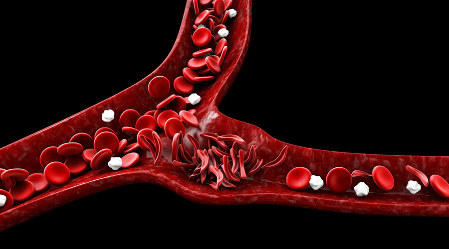

Lives could be saved.
Sickle-cell disease, is a group of diseases that makes blood cells deteriorate and contort them into sickle shapes. People impacted by this condition have suddon extreme pain, comparable to child birth. Other compications include anemia, increases suceptability to strokes, inceased suceptability to infections, and acute chest syndrome. 
What is CRISPR/CAS9?
CAS9 is part of bacteria used as a way to defend against bacteriophages, another really helpful tool, by checking its DNA. CRISPR is a implimentation of the CAS9 protien to edit DNA on other cells.
Think of CRISPR like the Airport baggage scanners. The bags are the DNA, and the scanner is CAS9. It gets compared against what the items should look like, if something appears off, the bag gets removed and the item is located in the bag and removed. CAS-9 is much the same, the protein looks for incorrect sections and cuts off that part. It then stores it for later to remove and reprogram later instances.